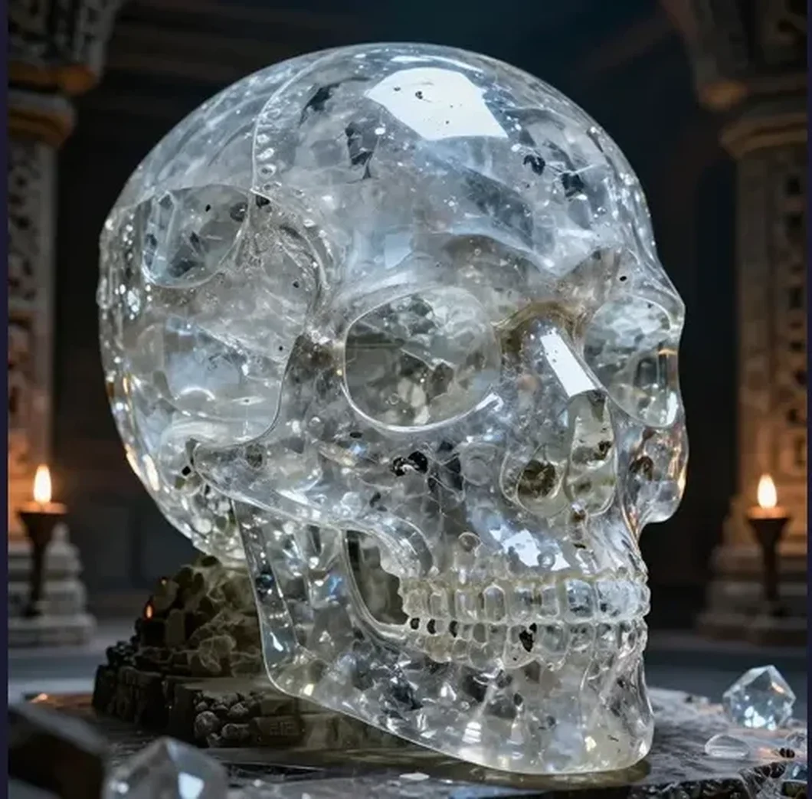

The Crystal Skulls: Ancient Mayan Artifacts or Elaborate Modern Forgeries?

Imagine a skull the size of a human head, carved from one block of clear, glittering crystal. For decades, people have called it a treasure from a lost civilization. Some say it holds knowledge or technology that the modern world has forgotten. These are the crystal skulls.
They are life-sized carvings of a human skull. Each is made from a single block of clear or milky quartz crystal. They have been shown in major museums and featured in big films. New Age believers say they have special powers. New Age believers follow modern spiritual ideas about healing and energy. They say the skulls can heal, send thoughts between minds, and make fields of energy.
The most famous is called the “Skull of Doom.” A story says a young girl found it under a fallen altar at the ancient Maya ruins of Lubaantun in Belize. That was in the 1920s. Some people said no known ancient tool could have made it.
The crystal skulls have been the subject of television documentaries and many books. They were the center of the 2008 film Indiana Jones and the Kingdom of the Crystal Skull. They have been studied by scientists at the British Museum, the Smithsonian Institution, and the laboratories of Hewlett-Packard.
But after decades of study, the science tells a very different story. It is not about ancient Maya priests or lost civilizations. It is about 19th-century German gem carvers, a shady French antiquities dealer, and a British adventurer who loved tall tales.
The skulls first became known in the late 19th century. At that time, museums in Europe and America were racing to collect objects from ancient civilizations around the world. They were especially interested in the pre-Columbian cultures of Mesoamerica, such as the Maya, Aztec, and Mixtec. Pre-Columbian means from before Columbus arrived in the Americas.
Collectors eagerly bought objects said to come from these peoples. That created a booming market for antiquities, which are very old objects. It also created a booming market for fakes.
The skulls are made from rock crystal, a clear or milky quartz. It is very hard. On the Mohs scale, which ranks how hard a mineral is, quartz scores 7. That is harder than steel. It is very difficult to carve without modern tools.
Real Mesoamerican cultures did carve stone with great skill. The Maya worked jade, obsidian, and other hard stones. The Aztec and Mixtec made skull images in stone and bone. Skulls were symbols of death, rebirth, and respect for ancestors. But no known culture of that region had a tradition of crystal skulls. A life-sized skull with true-to-life detail, cut from one block of quartz, has no match in the records of the Americas.
The most famous crystal skull is the Mitchell-Hedges Crystal Skull. It is a very detailed carving with a loose lower jaw, called a mandible, made from the same piece of crystal. It is about life-sized and made from one block of very clear quartz.
The story comes from Frederick Albert (“Mike”) Mitchell-Hedges (1882–1959). He was a British adventurer, stockbroker, and author. He said his adopted daughter, Anna Mitchell-Hedges, found the skull at the Maya ruins of Lubaantun in British Honduras, now Belize. The date was 1924 or 1926, depending on who tells it.
Mitchell-Hedges said Anna found it hidden under a collapsed altar or inside a pyramid. He said local Maya workers knew it was a powerful object. It was a dramatic and romantic tale. It was perfect for a public that loved ancient mysteries.
The problem is that nearly every part of this story seems to be false. Mitchell-Hedges did not mention the skull in any of his writings before 1954. It is not in his expedition accounts, his books, or his letters. His 1931 book Land of Wonder and Fear describes his adventures in Central America in detail, but it says nothing about a crystal skull.
The skull first shows up in public records in 1933. The art dealer Sydney Burney offered it for sale at Sotheby’s, an auction house in London. Mitchell-Hedges himself later wrote in his 1954 book Danger My Ally: “How it came into my possession I have reason for not revealing.” That hardly sounds like a man who had found a great treasure in a Maya site decades earlier.
In 1943, Mitchell-Hedges bought the skull at auction from Burney’s estate. It seems he bought the same skull he said he had found in the jungle.
The truth was uncovered by Jane MacLaren Walsh, an anthropologist at the Smithsonian. She did long research in old records. She found that the skull was almost certainly bought at auction in London in the 1930s or 1940s. The Lubaantun story, she says, was made up to raise its value and add to the Mitchell-Hedges legend.
In 1970, the Mitchell-Hedges skull was taken to the Hewlett-Packard laboratories in Santa Clara, California. Frank Dorland, an art conservator and crystal enthusiast, supervised the tests. Believers often cite the results as proof of an ancient or even supernatural origin.
The most dramatic finding was that the skull seemed to be carved against the crystal axis, the natural grain of the quartz. According to HP engineers, this should have made the crystal shatter. The tests also showed that the skull and its loose jaw came from the same block. There was no tiny mark showing how the two pieces had been separated.
But these findings do not prove an ancient origin. Later studies showed that skilled 19th-century gem cutters in Germany had the tools and skill to carve quartz to a very fine finish. And the HP tests did not include a close look at the tool marks. That look would later prove decisive in finding the skull’s true age.
The key person in the true story is Eugene Boban (1834–1918). He was a French antiquarian, dealer, and self-described archaeologist. He worked in Mexico City from the 1860s to the 1880s. He was a complicated man. He served as official archaeologist to Emperor Maximilian I. Maximilian was an Austrian archduke whom Napoleon III made ruler of Mexico in 1864. Boban also handled truly ancient objects.
But he was also known to deal in fakes. He mixed real pre-Columbian pieces with made-up ones to meet the huge demand from European and American collectors.
Boban entered the crystal skull story in 1886. He moved his business and collection from Mexico City to New York City. There he held a big auction of thousands of archaeological objects, colonial manuscripts, and books. At this auction, Tiffany & Co. bought a crystal skull for $950.
A decade later, Tiffany’s sold the skull to the British Museum. It was catalogued as BM Am1897,-662 and put on display as a pre-Columbian Mesoamerican object.
Boban links several crystal skulls together, and this is the key to the fake. Walsh traced the history of several skulls back to his dealings. She found he was the source of the British Museum skull and the Paris skull. The Paris skull is now at the Musée du Quai Branly, catalogued as MQB 71.1933.3.1. He may have been the source of others.
Boban had already been called a dealer of fakes in Mexico City. Walsh published her research in major archaeology journals, and the Smithsonian helped spread it. It showed that Boban sold crystal skulls when the market for pre-Columbian antiquities was booming. At that same time, European gem-cutting workshops were at their best at making convincing fakes.
The most likely birthplace of the crystal skulls is not a Maya temple in Central America. It is a small town in western Germany. Idar-Oberstein is in the state of Rhineland-Palatinate. In the 19th century it was one of the world’s great centers for cutting gems.
The town’s craftsmen were famous for working hard stones such as agate, jasper, and quartz. They had plenty of Brazilian quartz brought in just for carving.
Their workshops used spinning tools powered by water wheels and, later, steam engines. They used rough materials such as carborundum (silicon carbide) and diamond dust to grind. These were available in the 19th century but not in the pre-Columbian Americas.
Walsh and other researchers have concluded that the skulls were almost certainly made in Idar-Oberstein workshops in the late 19th century. The makers used Brazilian quartz and modern spinning cutting tools. Dealers like Boban then sold them as ancient Mesoamerican objects to collectors and museums, some of whom did not suspect a thing.
The strongest scientific studies were done in 2008 by researchers at the British Museum and the Smithsonian Institution. They used scanning electron microscopy (SEM), which makes huge, detailed pictures of a surface, along with other advanced methods. The results were crushing for any claim of ancient origin.
Both the British Museum skull and the Smithsonian skull showed clear signs of modern tool marks. There were parallel scratches and patterns that match spinning cutting tools and carborundum grit. Carborundum was not invented until 1891.
Pre-Columbian craftsmen used hammer stones and chisels. They also ground stone with natural materials such as quartz sand and stone grinders. These leave a rough, uneven pattern of marks. The marks on the skulls were different. The electron microscope showed regular, evenly spaced parallel grooves. This is the clear mark of a spinning tool.
Jane MacLaren Walsh also studied the Mitchell-Hedges skull with the same methods. She found similar signs that it was made in modern times. The Smithsonian’s own crystal skull (Catalog No. A407731-0) had been sent to it anonymously in 1992. It too was confirmed as a modern creation. The British Museum took its skull off display as a real pre-Columbian object and relabeled it as a 19th-century European creation.
Even so, the skulls inspired a huge business of paranormal and New Age beliefs. Believers say they have extraordinary powers. They say the skulls can heal, bring visions, let people talk with minds far away, make energy, and even store the knowledge of ancient civilizations.
Joshua Shapiro calls himself a “crystal skull explorer.” He has written several books about the paranormal powers of the skulls. He holds events where people can “commune” with them. Anna Mitchell-Hedges herself became a regular on the New Age and paranormal lecture circuit. She showed the skull and described its mystical powers until her death in 2007 at the age of 100.
The most elaborate paranormal story is the legend of the Thirteen Crystal Skulls. It says that 13 ancient crystal skulls exist. When they are brought together, they will unlock ancient wisdom and save humanity from disaster. Nick Nocerino made the legend popular. He called himself a psychic and paranormal researcher and said he had discovered the prophecy.
The 13-skull legend has no basis in any known Mesoamerican Indigenous myth or oral tradition. It seems to be entirely modern. It mixes New Age spirituality, Hollywood stories, and the human wish for ancient wisdom to solve modern problems.
The 2008 Indiana Jones film made the legend stronger. In it, the crystal skulls are the artifacts of an alien civilization from another dimension. The film was fiction. But it introduced millions of viewers to mystical crystal skulls. It also gave the myth a kind of cultural respect that the scientific evidence could not undo.
Indigenous Mesoamerican peoples saw skulls very differently from how modern Westerners imagine. They did not see them as objects of horror or doom. They saw them as symbols of rebirth, ancestors, and the continuing of life. The crystal skull myth is a Western idea placed on Mesoamerican cultures. It has little to do with what those peoples believed or did.
The scientist most responsible for the debunking is Jane MacLaren Walsh. She is an anthropologist at the Smithsonian National Museum of Natural History and an expert on Mexican archaeology. She began studying the crystal skulls in the 1990s, when she was asked to research the Smithsonian skull that arrived anonymously.
Her investigation lasted over a decade. She looked at several skulls under high-powered microscopes, ultraviolet light, CT scans, and scanning electron microscopes. She also did a lot of research in old records. She traced the history of the skulls through auction records, museum catalogues, and the letters of dealers such as Eugene Boban.
Walsh published her findings in 2008 in the journal American Anthropologist and in Smithsonian publications. They showed that the skulls were modern creations. Her work on the Mitchell-Hedges skull, published in Archaeology Magazine in 2010, was especially important. She made silicone molds of tool marks on the skull and studied them with scanning electron microscopes.
She found clear signs of fast, diamond-coated cutting tools. That technology did not exist in the pre-Columbian Americas. Her work is described as one of the most thorough and convincing debunkings in archaeology in modern times. Many credit her with solving the crystal skull mystery once and for all.
The crystal skulls are a great warning story in archaeology. They show the power of wishful thinking and the money in mystery. They also show how hard it is to separate fact from fake when the world badly wants to believe in ancient secrets.
The scientific evidence is now very strong and clear. The skulls tested so far were made in the mid-19th century or later. They were almost certainly made in European workshops, most likely in the gem-cutting town of Idar-Oberstein, Germany. The makers used spinning tools and modern grinding materials that did not exist in the pre-Columbian Americas.
The trail of ownership leads not to Maya temples but to the shop of the French antiquities dealer Eugene Boban and to auction houses in London and New York. The “ancient” stories about the skulls have no basis in any Indigenous Mesoamerican tradition. These include the 13-skull prophecy, the healing powers, and the alien origins.
Yet the legend lives on. New Age belief, Hollywood stories, and the human wish to find proof that the ancients knew things we do not all keep it alive. The crystal skulls may not be ancient. But they are still fascinating, as objects from the 19th-century antiquities market and the 20th-century paranormal world.
They remind us that the most interesting mysteries are sometimes not about what ancient people did. They are about what modern people want to believe. Why do we so badly want these skulls to be ancient?
References & Further Reading
Wikipedia: Mesoamerican Art — The genuine artistic traditions of pre-Columbian cultures
📚 Recommended Reading: The Mystery of the Crystal Skulls: Unlocking the Secrets of the Past, Present, and Future by Chris Morton and Ceri Louise Thomas (on Amazon) — As an Amazon Associate, we earn from qualifying purchases.
Editorial note: The crystal skulls are documented through scientific studies by the British Museum and Smithsonian Institution (2008), archaeological research by Jane MacLaren Walsh, and historical provenance research tracing the skulls to Eugene Boban and 19th-century German workshops. See our Editorial Policy.